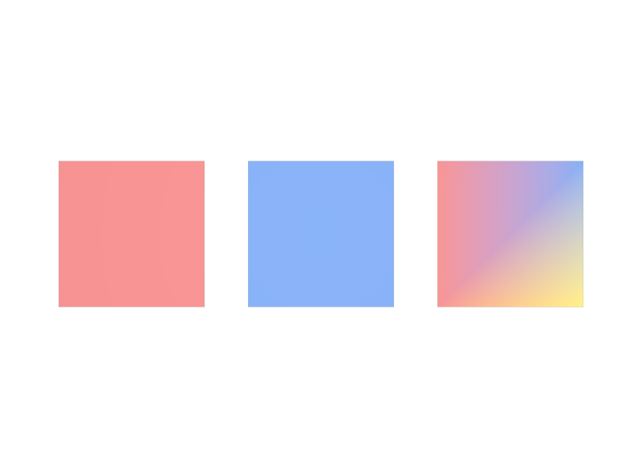

Primvarそのものを Metadata だと思う
Primvarの本体はAttributeです。Metadataなのはinterpolationのほうです。PythonではUsdGeomPrimvarと、その中のGetAttr()を区別します。
LESSON 23 · PROPERTIES
形の上に値を配れる、特別なAttributeです
今日これだけ
公式情報に基づく説明
Primvarは、UV、頂点カラー、変形用のデータなどを保持するためのAttributeです。名前がprimvars:というNamespaceで始まり、通常のAttributeにはない3つの機能を持ちます。Interpolationで値をSurfaceのどの単位へ対応させるかを決め、indexで同じ値を使い回し、継承で親から子のPrimへ値を届けます。Primvarとして書かれた値は、Shaderへ渡せる情報にもなります。
USDA
def Mesh "Constant"
{
uniform token subdivisionScheme = "none"
int[] faceVertexCounts = [4]
int[] faceVertexIndices = [0, 1, 2, 3]
point3f[] points = [(0, 0, 0), (1, 0, 0), (1, 1, 0), (0, 1, 0)]
color3f[] primvars:displayColor = [(0.85, 0.2, 0.2)] (
interpolation = "constant"
)
}primvars:displayColorのコロン:はNamespaceの区切りで、「primvarsというまとまりに属するdisplayColor」という意味です。Attribute名の後ろの丸括弧の中はAttribute Metadataを書く場所で、interpolationはここに入ります。color3f[]という型と= [...]という値は、通常のAttributeとまったく同じ書き方です。
結果

primvars:displayColorです。違うのはinterpolationと値の個数だけで、右の板だけがPointごとの値を持ちグラデーションになります。examples/lesson-23/primvar-overview.usda / Apple USD Tools 0.25.2 のusdrecord（Hydra Storm・Metal）/ macOS 26.5.2・Apple M4Diagram
Python
from pxr import Gf, Sdf, Usd, UsdGeom
stage = Usd.Stage.CreateNew("primvar.usda")
mesh = UsdGeom.Mesh.Define(stage, "/World/Panel")
api = UsdGeom.PrimvarsAPI(mesh)
pv = api.CreatePrimvar(
"displayColor", Sdf.ValueTypeNames.Color3fArray, UsdGeom.Tokens.constant)
pv.Set([Gf.Vec3f(0.85, 0.2, 0.2)])
print(pv.GetName()) # primvars:displayColor
print(pv.GetInterpolation()) # constant
print(pv.GetAttr()) # 中身は普通のAttribute
stage.Save()UsdGeom.PrimvarsAPIがPrimvarの入り口です。CreatePrimvarへ渡す名前は"displayColor"のようにprimvars:を付けずに書き、実際のAttribute名には自動で付きます。返ってくるUsdGeomPrimvarは、GetAttr()で中身のAttributeを取り出せます。
USDA → Python mapping
USDA
color3f[] primvars:displayColor↓Python
api.CreatePrimvar("displayColor", Sdf.ValueTypeNames.Color3fArray, ...)USDA
interpolation = "constant"↓Python
pv.SetInterpolation(UsdGeom.Tokens.constant)USDA
primvars:displayColor:indices↓Python
pv.SetIndices([...])Beginner notes
よくある間違い
Primvarの本体はAttributeです。Metadataなのはinterpolationのほうです。PythonではUsdGeomPrimvarと、その中のGetAttr()を区別します。
CreatePrimvar("primvars:displayColor", ...)と書くと、名前が二重になります。Namespaceを除いた"displayColor"を渡します。
Primvarで最も多い失敗は個数のずれです。interpolationを決めたら、Face数・Point数・Face Vertex数のどれを数えるのかを先に確認します。
Glossary
primvars:で始まり、Interpolation・index・継承を扱えるAttribute。Official references
確認日: